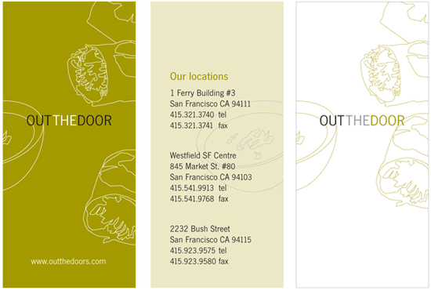

The Slanted Door is a modern Vietnamese Restaurant located in San Francisco's Ferry Building. We designed the logo, stationery, menus, gift cards and cooking kits for the Ferry Building location (in collaboration with Tenazas Design), and subsequently designed stationery, menu boards and print collateral for their new Out the Door locations at Westfield and Bush Street.
What we did: design, print production, photography art direction, signage design, package design
Slanted Door logo
Identity system

Menus and gift cards
Cooking kits

Out the Door logo
Business cards
Menus and typography guide

Gift cards